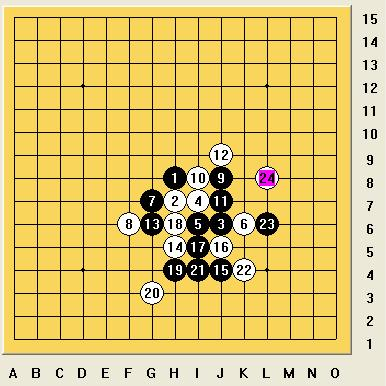

小刀和罗罗一疏星对局
#1 小刀和罗罗一疏星对局 作者：慎独 发表时间：2009-4-26 19:08:28

今天应小刀之请写小刀与罗罗一局对弈的棋评；
疏星开局小刀执黑，五手选定后白6避开通常J8，以及同强的G6，选定K6，应该可以一战，第9手之后个人认为应该是黑中盘略优的局势，但也势必是个较难的局面。然而对局中白14选于H5败，之后黑轻松运用vct手段至23成双杀取胜。此局对弈时间极短，盘面落子也不到30手。因此以下就最主要两个问题分析。
第一个问题，对白子极为关键的14，黑13落定防白活三又自成一活二，于右侧有很好的衔接，之后攻势尤显，白14何以败，想必不用多讲，关键我们可以考虑到这个局面之后14该如何应对。白14必须做到限制黑子的子力连接使其难以成杀，又要不失自身的积极性。白14应当是极为关键的而又需冷静应对的一手！因此就不可避免的来算黑子的vct取胜手段，因此也引出了一个对弈中较为关键的问题，计算的准确性以及时间性。就这点而言个人认为网战短短15分的对局，从某种程度讲还是对真正热衷五子棋的朋友而言还是很有考验价值的。
第二个问题，我们回到白第10手的应对上，从防守的积极性考虑这个10应该较弱的一个选点。谈到防守积极性，也就又回到了计算力这一层次上来了。要有较深的计算，我们才能做到较为积极的防守。从本局可见，五子棋对局的计算力的重要性，进一步应该说是计算的效率性。补充一点本局的10应该还反映了棋手对于一个局面的熟悉性，虽然我们不可能熟悉每一个局面，但是当遇到一个新局面，赛后我们应当积极分析、拆解。（这方面本人有很深的体会和教训，虽然下棋几年，但期间断断续续，至今也就停留在CN水平）。希望各位热衷五子棋的朋友，在五子棋的路上奋勇先前，虽然这其中也必有些艰辛，但请坚信欢笑总比苦涩多！希望我们在五子棋的道路上没遗憾，也希望在人生的道理上没遗憾！
［ 茗弈小刀 于 2009-4-26 19:11:14 时奖励此帖[金币加 20 威望加1］
［ 岳麓小棋后 于 2009-4-26 23:43:51 时花20金币送鲜花一朵］
［ 香雪美景 于 2009-4-27 16:53:01 时花20金币送鲜花一朵］
#2 Re:小刀和罗罗一疏星对局 作者：茗弈小刀 发表时间：2009-4-26 19:12:55
写得很好，分析细致，深入。也算给那臭小子上一课。谢谢！#3 Re:小刀和罗罗一疏星对局 作者：wd1988 发表时间：2009-4-26 19:46:59
这个疏星白6我经常下，嘿嘿。。。。#4 Re:小刀和罗罗一疏星对局 作者：黄药师 发表时间：2009-4-26 20:04:39
楼上的头像是个亮点～～～～#5 Re:小刀和罗罗一疏星对局 作者：盖世英雄 发表时间：2009-4-27 11:10:49
说实话 是我14也会下这个 这应该是初学者的通病 很多靠感觉下棋 我敢说这手14很多初学者都会下这个 因为看上去似乎很必然 从棋型上看打断了黑左右链接 结果还是被黑上下链接杀 所以对于有一定基础的初学者来说提高计算力是很关键的 养成不下随手棋的习惯［ 茗弈小刀 于 2009-4-27 12:23:46 时花20金币送鲜花一朵］
#6 Re:小刀和罗罗一疏星对局 作者：香雪美景 发表时间：2009-4-27 16:55:24
那么小啊!和我儿子差不多,回来也叫我儿子来下棋.
#7 Re:小刀和罗罗一疏星对局 作者：lfzxdh 发表时间：2009-5-4 19:41:55
ＣＮ是什么意思呢？
#8 Re:小刀和罗罗一疏星对局 作者：解放者 发表时间：2009-5-19 22:24:12
5555555555555~~~~
妈呀，我就除了14和人家想得一样外，其他全部都不一样。前面白棋6之后走的都是最好的点的吗？我不信
话说小刀这两三年进步也太快了点。是怎么学的啊？（是不是练了葵花宝典什么的？ ）
）
来透露点诀窍给俺吧。
要换作她05年以前在无禁高分区混时的水平，比我现在也强不了多少。
#9 Re:小刀和罗罗一疏星对局 作者：茗弈小刀 发表时间：2009-5-20 9:46:42
我每天除了下棋基本不做别的，你如果这样你比我厉害多了，男孩对棋的领悟绝对比女孩强。#10 Re:小刀和罗罗一疏星对局 作者：解放者 发表时间：2009-5-20 10:13:08
呃。原来楼上是职业棋手了。我还听人说你在网上下棋很多时候是人软谱合一地上。
这样时时都看软件的套路，进步就会特别快吗？
#11 Re:小刀和罗罗一疏星对局 作者：没事摆石子玩 发表时间：2009-5-20 12:30:42
楼上你莫非实战很强？敢报大名吗？别人用什么下棋关你啥事？你不服也开个软件找她下呀！或去实战证明你自己！看你就一个找茬的货色罢了。#12 Re:小刀和罗罗一疏星对局 作者：没事摆石子玩 发表时间：2009-5-20 12:31:44
小刀姐不用对这样的人客气！#13 Re:小刀和罗罗一疏星对局 作者：解放者 发表时间：2009-5-20 13:16:05
呵呵，只要眼睛和心没瞎的人都看得出谁的态度才是在找茬。
连这种完全善意的询问，一经过你大脑沟回的加工就变得臭不可闻，究竟是我话臭还是你脑臭是明摆的，不赶紧去拿个CT照照自个儿还说别人呢。我看你这种人只要上街就是惹事找打的货。
#14 Re:小刀和罗罗一疏星对局 作者：没事摆石子玩 发表时间：2009-5-20 13:34:10
据你说你是下了很多年的“前辈”咯？敢报实战名字吗？#15 Re:小刀和罗罗一疏星对局 作者：解放者 发表时间：2009-5-20 13:43:06
废话。这几年我在qq游戏上战的名字就是这个。一般是在无禁手1的50房或100房找2，3段以上的玩，或是在无禁高分区1。
我能玩的时间少，就算棋龄超长也只能瘾大技术差啊。
［ 撒蓉儿 于 2009-5-20 15:11:54 时花50金币砸了你一个臭鸡蛋］
#16 Re:小刀和罗罗一疏星对局 作者：没事摆石子玩 发表时间：2009-5-20 13:44:02
哈哈，原来是下无禁的高手哦？
#17 Re:小刀和罗罗一疏星对局 作者：菜包先生 发表时间：2009-5-20 13:51:04
哪个实战的，28号出来全团吧。#18 Re:小刀和罗罗一疏星对局 作者：五子痴 发表时间：2009-5-20 14:02:09
第一 每个人的悟性不同 就像考数学题一样 有的人10分钟就做出来了
有的人得一小时 所以你进步的慢 不代表别人就不能进步的快一些
第二 小刀 一天N小时在下五子棋 又有几人对五子棋有这种执着和毅力？ 她的进步是循序渐进的 这几年我目睹了她的成长
第三 小刀的师傅都是出类拔萃的 我相信小刀的进步 和这些优秀的师傅 是密不可分的！
#19 Re:Re:小刀和罗罗一疏星对局 作者：撒蓉儿 发表时间：2009-5-20 15:37:57
请不要以这种态度来分析别人，你想不出好点只能说你愚钝，姐姐下棋思维敏捷，思路开阔能下出这样的好点这很正常，至于说姐姐进步的快与慢，人所共知姐姐只要在线几乎都是在下棋，五子痴大哥说得对，姐姐身边有出类拔萃的老师，所以进步快这也很正常，还有这里是为所有爱好五子棋者探讨问题解决问题的一片净土，请以后不要再发一些无聊乏味的贴，否则得到的只能是唾弃、排挤还有臭鸡蛋！！！！！ 最后欢迎你常来这里发一些学术类的问题供大家探讨研究，OK?
最后欢迎你常来这里发一些学术类的问题供大家探讨研究，OK?
#20 Re:小刀和罗罗一疏星对局 作者：解放者 发表时间：2009-5-20 16:10:38
麻烦楼上看清楚我说的是黑棋白棋好不？也请弄准别人的用意。这样不过脑子就条件反射样地党同伐异，不过让外人看了笑话。
我想说的无非是：白棋14以前走得很好吗？我怎么看都觉得10是败笔啊。
#21 Re:小刀和罗罗一疏星对局 作者：茗弈小刀 发表时间：2009-5-20 16:16:44
好了楼上的朋友，这里是论坛，如果你是想交流探讨棋我们欢迎。别的请不要在这里发。如果你说10是败招，那你黑怎么杀？
14是败招我承认，但你知道下棋这个是谁吗？是我干儿子，年仅8岁。当然你要找他下我可以帮你联系。
#22 Re:小刀和罗罗一疏星对局 作者：撒蓉儿 发表时间：2009-5-20 16:24:42
解放者如果是蓉儿误解了请你原谅在这里向你道歉，不过还是希望你能走出更好的点，其它问题我们到此为止，交流探讨第一，OK？
［ 茗弈小刀 于 2009-5-20 16:25:05 时花20金币送鲜花一朵］
#23 Re:Re:小刀和罗罗一疏星对局 作者：解放者 发表时间：2009-5-20 16:51:51
引用：
原文由 茗弈小刀 发表于 2009-5-20 16:16:44 :好了楼上的朋友，这里是论坛，如果你是想交流探讨棋我们欢迎。别的请不要在这里发。如果你说10是败招，那你黑怎么杀？
14是败招我承认，但你知道下棋这个是谁吗？是我干儿子，年仅8岁。当然你要找他下我可以帮你联系。
如果是无禁，白下了这个10就败了吧。有禁的黑每种情况下怎么杀我目前还没算出，但感觉上好象是必胜的吧？
还有如果黑9下到黑17那里貌似也比较厉害（我是算不出到底怎么杀，但我基本能肯定你只要那样走的话我肯定应付不了。我可能是吃过近似棋形的苦头）。
#24 Re:小刀和罗罗一疏星对局 作者：茗弈小刀 发表时间：2009-5-20 16:55:36
哦，你说的无禁呀。“有禁的黑每种情况下怎么杀我目前还没算出，但感觉上好象是必胜的吧？”说的哪手？10是好点，14是败招就是了。#25 Re:小刀和罗罗一疏星对局 作者：解放者 发表时间：2009-5-20 17:07:42
白10很好吗？真的没比这个10更强的防了？无禁的话黑已经胜。
可有禁的走这个白10，感觉白14真的很难下，试了好几个点都扛不住，黑都有得杀。假如白10走在J7行不行呢？还有如果你的黑9下到黑17那里是不是也很厉害呢？
#26 Re:小刀和罗罗一疏星对局 作者：茗弈小刀 发表时间：2009-5-20 17:13:09
很多点都可以下，变化是无穷的，只要不是败就可以下。比如这个10
=======上图对应的爱五子棋谱代码如下，以便你拆解：========
h8h7j6i7i6k6g7f6j8k7
======================================================
下这里也挺好。
#27 Re:小刀和罗罗一疏星对局 作者：wd1988 发表时间：2009-5-20 17:20:32
别拿无禁来套有禁。。。这个白10是有禁下的一颗子。。。如果你没想到这个10之后黑如何必胜，那就不要随便发言说这个白10有多不好。。。#28 Re:Re:小刀和罗罗一疏星对局 作者：黄药师 发表时间：2009-5-27 19:33:44
引用：
原文由 茗弈小刀 发表于 2009-5-20 16:16:44 :好了楼上的朋友，这里是论坛，如果你是想交流探讨棋我们欢迎。别的请不要在这里发。如果你说10是败招，那你黑怎么杀？
14是败招我承认，但你知道下棋这个是谁吗？是我干儿子，年仅8岁。当然你要找他下我可以帮你联系。
汗～干儿子啊！
这个小罗罗是不是有很多干亲戚教下棋啊？
#29 Re:小刀和罗罗一疏星对局 作者：茗弈小刀 发表时间：2009-5-27 20:09:18
我的臭小子罗罗比赛去了，祝福他好运吧。他下棋天赋高，以后还请各位叔叔多多指点为感。